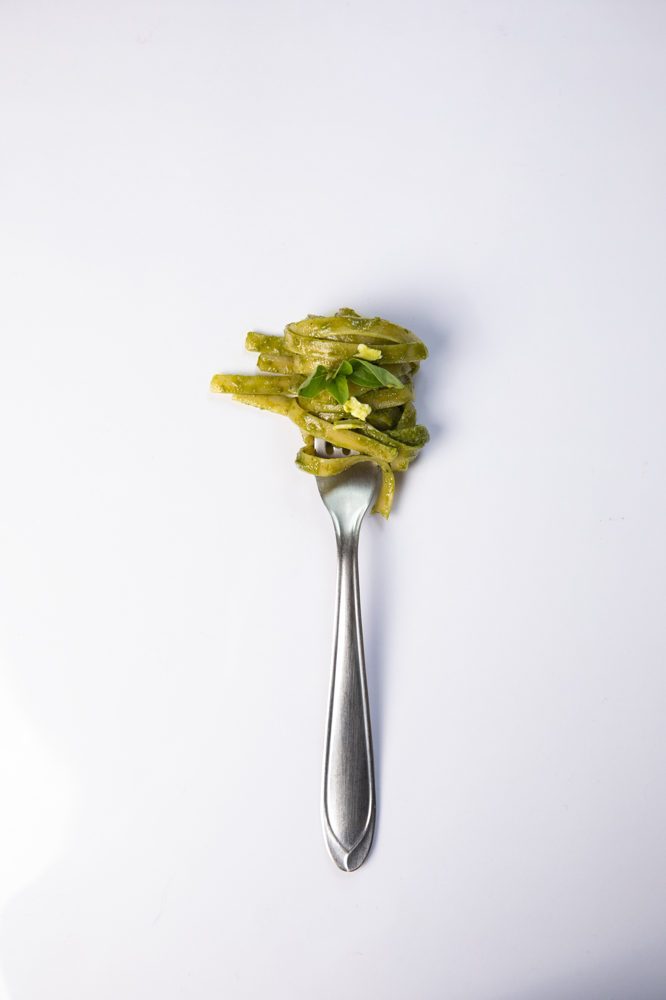
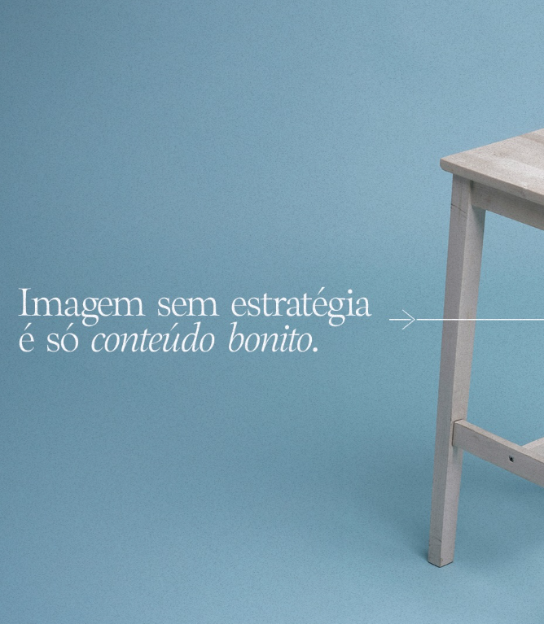
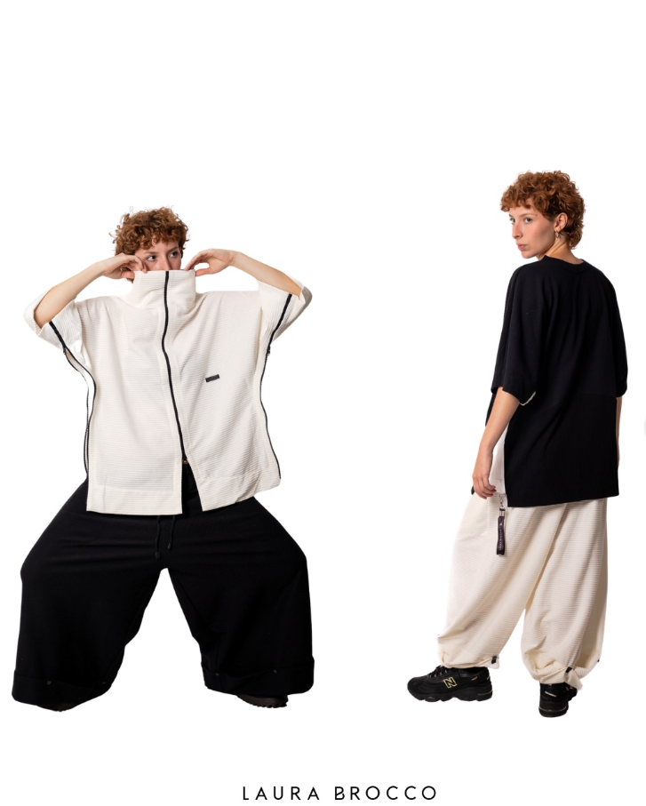
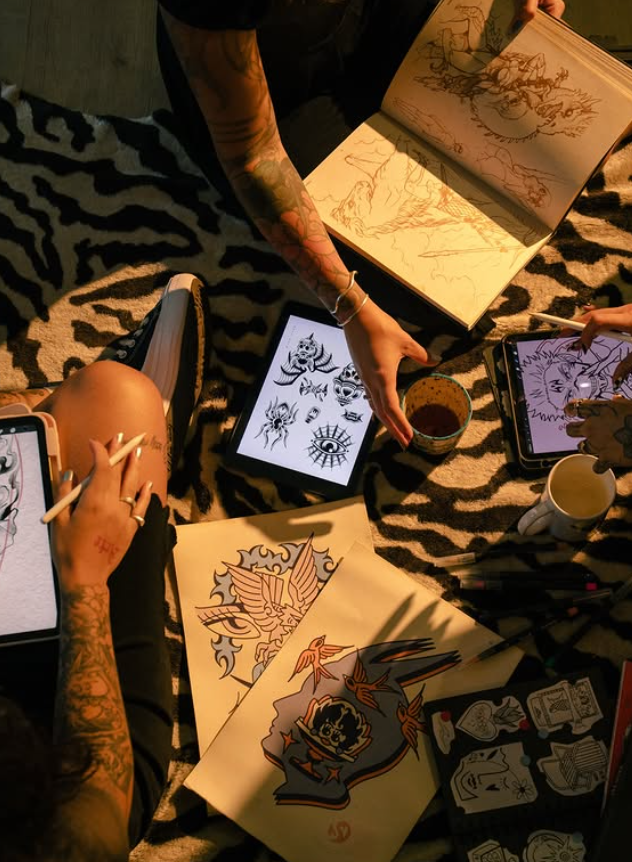

01Direção Visual
Construção de identidade visual, linguagem estética, referências, posicionamento visual e direcionamento criativo para marcas e campanhas.
Serviços
A FUKUIFILM desenvolve projetos visuais para marcas, empresas e profissionais que precisam comunicar valor de forma mais estratégica, estética e memorável.

01Construção de identidade visual, linguagem estética, referências, posicionamento visual e direcionamento criativo para marcas e campanhas.

02Construído para comunicar ideias, fortalecer marcas e criar experiências visuais capazes de permanecer na memória do público.
 03
03
Fotografias para produtos, empresas, profissionais, campanhas publicitárias e fortalecimento de marca.
Planejamento e desenvolvimento visual de campanhas completas para lançamentos, posicionamento e divulgação.

05Criação de materiais visuais voltados para Instagram, anúncios e presença digital com consistência estética.

06Desenvolvimento de filmes, séries fotográficas e projetos experimentais que exploram narrativa, imagem e conceito.
Processo
Entendimento do objetivo, contexto e posicionamento.
Definição da linguagem visual e narrativa.
Execução dos materiais com atenção aos detalhes.
Arquivos organizados e preparados para uso real.
Próximo passo